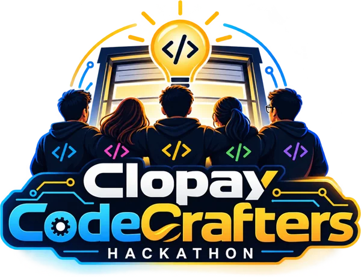

TransferHubSmarter Transfer Credit Evaluation
Transfer students see which credits are secure from the moment they upload. Department evaluators get every course pre-read, triaged and ranked against BU's catalogue, and the department still makes every final call.
Built by Clopay CodeCrafters, five engineers from the Microsoft and UI practices at Evoke Technologies.

Every "maybe" course waits on a person, and the student sees 0 units
Boston University matches every course on every incoming transcript to a BU course. Known equivalencies apply directly. Everything else is read by hand, one course at a time, and the same external course is compared again for every new student.
- 800+transfer students a year, each with a transcript of courses to match.
- maybeAny course not in the equivalency database needs a syllabus and a department evaluator comparing descriptions, outcomes and credit hours by hand.
- 0 unitsis what an undecided course shows. Students cannot see how much of their degree is secure or plan registration.
- 1 yearAll transfer credit must be settled within one year of starting at BU (rule PRG-02).
Wants to know which credits are secure, what to do next and by when. Today she chases old syllabi and sees 0 units.
Needs all the evidence in one place and consistency with what colleagues decided before.
Needs a clean queue, fast lookups, and less chasing of syllabi and deadlines.
Submits students and catalogue data in bulk and wants status back instead of email and spreadsheets.
Configures universities, workflows, AI and roles; watches backlog, turnaround and AI spend.
From registration to posted credit in one tracked request
Agents do the reading and matching. People approve. Each decision is saved as an equivalency, so the next student with the same course is applied automatically.
Register
Six-step form: account, target university and program, contact, every prior college plus AP/IB/A-level, language and outside-US check.
studentSmart Upload reads documents
Transcripts, IDs, English tests and syllabi are classified and their fields extracted. Blanks in the profile are filled in.
AI or rules readerCourses captured automatically
Courses read from the transcript prefill the transfer request. No retyping; the student checks and edits.
studentSubmit
Request goes to the chosen university and program. That university's workflow starts.
student or agencyTriage + top-3 suggestions
systemsp_TriageCoursesorts each course into a lane, the policy engine tightens it, and the matcher ranks three BU candidates.Faculty and admin approval
Side-by-side comparison with overlapping topics highlighted and credit math shown. One click to decide.
faculty · adminEquivalency saved, skills learned
systemsp_RecordDecisionwrites the mapping with effective dates. Repeated overrides become suggested playbook rules.Posted
Credit is posted, degree progress updates, and the sending college can be notified.
system
Known equivalency. Credit secure at upload, no review.
The "maybe" lane. Syllabus asked for only these courses; evaluator sees top-3 candidates.
Counts as elective credit, or must be taken at BU (PRG-03).
Grade below C, internship, unaccredited, or outside-US (routed to International Admissions).
What is built
Everything below runs on the live site. Each item maps to a requirement in the traceability matrix.
Workflow designer
Per-university stages (system, review, approval), approver groups, SLAs with escalation, auto-approve above a confidence threshold, stage and whole-request bypass, internal vs student notes, insights.
Policy engine
BU rules as data: C-or-better, P/F to review, course age, accreditation, 68/60 external-credit caps by applicant type, quarter × 2/3, one-year deadline, 12 programme rules, AP/IB/CLEP thresholds. It only tightens lanes.
AI controls and spend
Anthropic, Azure OpenAI or any OpenAI-compatible provider. Budgets, cheap model with escalation, match cache, prompt caching, editable playbook skills, per-request token and dollar log, benchmark.
Pluggable AI providers
Live AI runs on Azure OpenAI through Azure AI Foundry, and Anthropic Claude is also configured. More providers can be configured when required, with no code change. A zero-token rules engine takes over when no provider is active; its confidence is capped at 0.7, so it never auto-approves at default thresholds.
Partner API and portal
Hashed th_live_ API keys scoped to one university. Partners push universities, programs, courses, topics and students into a review queue, then get a per-row report by email.
Intake by claim link
A student enters an ID and email, receives a 48-hour link, confirms the record held by the source system, and only then is an account created.
Exchange between universities
The sending and receiving universities both see the request, request documents from each other and send reminders. The sending side is read-only.
Roles and permissions matrix
Role × module × operation grants, enforced live on every request. Custom roles, and staff scoped to their own universities.
Dashboards per role
KPIs and charts for student, faculty, admin and super admin, plus degree progress (secure, likely, pending, not counted) and workflow turnaround.
Mobile ready
Responsive layout, card tables on phones, a student tab bar, camera capture of multi-page documents, installable PWA manifest.
Appeals and cancellation
BU's Transfer Credit Appeal form as a flow, decided by the department. Students can cancel an open request and keep a progress snapshot.
Branded email and audit
Resend templates editable by the super admin, a full audit log, Swagger at /api/docs, and a repeatable demo scenario page.
The right BU course is in the top three 96.8% of the time
The measurable outcome is the matcher's hit rate on held-out past decisions: hide a decision, ask the matcher, check where the real answer ranks. It runs from AI Controls › Usage.
What this number is. It comes from the zero-token rules engine, the floor every provider has to beat. Live AI runs on Azure OpenAI (Azure AI Foundry), with Anthropic also configured; the same backtest harness and the AI Controls benchmark score each provider, and we have not published an AI accuracy figure yet. No before/after timing is claimed because BU supplied no baseline turnaround.
| Maya's course | Case | Result |
|---|---|---|
| BSCC CSC 110 | Known | applied CAS CS 111 · 4 cr |
| BSCC MAT 210 | Known | applied CAS MA 123 · 4 cr |
| BSCC ECO 101 | Known | applied CAS EC 101 · 3 cr |
| BSCC CSC 220 | Maybe | review CS 112 ranked first, 62% |
| BSCC CSC 240 | Maybe | review CS 131 58%, MA 293 55% |
| PVTC CIS 150 | Quarter | 4 × 2/3 = 2.66 semester cr vs MA 242 (4) |
The brief's six-course demo transcript. 11 credits are secure at upload (4 + 4 + 3), before anyone opens the request. Quarter credits are truncated, not rounded.
TypeScript end to end, on Azure
One Node app on Azure App Service serves both the API and the built React app. Versions are taken from the repository's package files.
Frontend
Backend
Database
No ORM. Core decisions live in stored procedures. Every migration is numbered and idempotent, and both runner tools share one applied-scripts ledger.
AI
Keys stay server-side. The provider is chosen in AI Controls; the rules engine takes over whenever no provider is ready.
Cloud and DevOps
Five built-in roles, each with its own workspace
Permissions come from a role × module × operation matrix the super admin edits on screen. Changes take effect on the next request.
| Role | Who | What they can do |
|---|---|---|
| Studentstudent | Transfer applicant or current BU student |
|
| Facultyfaculty | Department evaluator |
|
| Adminadmin | Credit Evaluation staff |
|
| Agencyagency | Partner agency submitting for students |
|
| Super Adminsuper_admin | Platform owner |
|
Custom roles
The super admin can create roles such as "Registrar reviewer". Each is built on a base role (student, faculty, admin or agency, never super admin) that sets its screens, and it has its own grants in the permissions matrix, starting as a copy of the base role's grants.
Maya Rivera's six courses, about eight minutes
All data is synthetic. The super admin's Demo scenario page resets Maya to upload state, so the walkthrough can be repeated.
Configure the workflowsuper admin
Workflow designer: stages from AI match to faculty review, finance, first and final approver; approver groups, SLA, auto-approve threshold, bypass.
Register and Smart Uploadstudent
Maya registers for BU CAS Computer Science and drops her transcripts. The reader classifies them and extracts the courses.
Submit and see instant statusstudent
Courses prefill the request. Three are applied at once: 11 credits secure, two waiting on the department, CIS 150 converted to 2.66.
Evaluator workbenchfaculty
CSC 220 side by side with CAS CS 112: overlapping topics highlighted, credit math shown. Decide CS 112, 4 cr. Decide CSC 240 and the quarter course.
Approve and postadmin
Finance, first and final approver stages. All six courses post; Maya's live tracker and degree progress update. Both universities see the transfer.
Learning loopsuper admin
Add a second student, Noah Chen, also with BSCC CSC 220. It is applied to CS 112 automatically, with no review.
AI statssuper admin
AI Controls: usage and spend per request, tokens avoided by cache and shortlist, the backtest card, engine benchmark and learned-skill suggestions.
Submission deliverables
- README: setup, how to run, tech stack, roles and tests.
- Discovery document: problem, users, requirements and scope (
_designs/DISCOVERY.md), with the requirements traceability matrix and gap analysis. - Agent instruction files in
.claude/agentsand.github/agents. - Demo video on SharePoint.
- Presentation: full deck and demo deck (PPT).
- Live site and source: transferhub.wcubeprojects.in and the GitHub repository.
Clopay CodeCrafters
Five engineers from Evoke Technologies' Microsoft and UI practices.